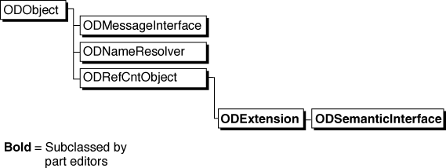
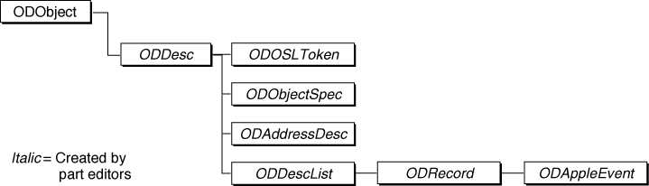
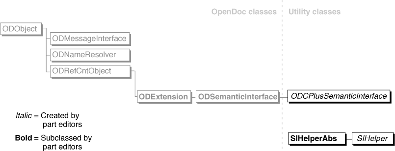
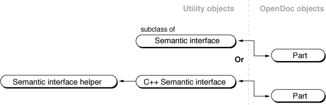

The OpenDoc Semantic Interface
To help you add scripting capability to your parts, OpenDoc provides the following code interfaces and implementations:This section describes how to use these three components of the OpenDoc semantic interface.
- the semantic-interface extension protocol, defined by the abstract class
ODSemanticInterface- utility classes, with which you can optionally implement your semantic-interface extension
- a default semantic interface, which provides minimal capabilities for handling semantic events
- Document shell semantic interface
- The document shell semantic interface is a special instantiation of a subclass of
ODSemanticInterface, created by the document shell (or a container application) and referenced by the session object. Access to the document shell semantic interface is public, although under most circumstances there is no reason for a part to use it. The document shell semantic interface handles only those semantic events whose scope is document-wide (such as the required set of Apple events). Most semantic events sent to the document shell are passed to the root part.
Scripting-Related OpenDoc Classes
Several OpenDoc classes provide the basic structure for its support of semantic events and scripting. Figure 9-1, a duplication of a portion of the OpenDoc class hierarchy (Figure 2-1), shows the principal OpenDoc classes involved with scripting.Figure 9-1 Inheritance hierarchy of scripting-related objects

Three classes provide basic support for scripting in OpenDoc:OpenDoc also provides a set of scripting-related classes, shown in Figure 9-2, that are wrappers for Apple event descriptor structures. Like other OpenDoc classes, these classes descend from
- The class
ODSemanticInterfacedefines the programming interface through which script editors or other sources of semantic events communicate with your part. It is a subclass ofODExtensionand is an abstract superclass; you must subclassODSemanticInterfaceto make your part scriptable.You can design and implement your own subclass of
ODSemanticInterface, or you can use the utility classes provided with OpenDoc; see "Scripting-Related Utility Classes".- The class
ODNameResolverrepresents the name resolver, a subclass ofODObjectthat is instantiated by the session object. It is used in resolving object specifiers; see "Object Resolution".- The class
ODMessageInterfacerepresents the message interface, a subclass ofODObjectthat is instantiated by the session object. It provides an interface through which your part sends semantic events to other parts; see "Sending Semantic Events".(The message interface is also the object through which OpenDoc sends semantic events to your part, although your part does not make any calls to the message interface in that situation.)
ODObject.Figure 9-2 Inheritance hierarchy of the object-descriptor classes

The object-descriptor classes exist so that future versions of OpenDoc can support remote callbacks. They are mostly simple wrappers for structures, although some define a few methods that you can call. Other thanODOSLToken, the structures that these objects wrap are all Apple events structures defined in the chapter "Introduction to Apple Events" in Inside Macintosh: Interapplication Communication.
- The class
ODDescis a general wrapper for a descriptor structure (typeAEDesc), the basic structure used for building Apple event attributes and parameters.ODDescis a direct subclass ofODObject; the other descriptor classes are all direct or indirect subclasses ofODDesc.
ODDescprovides methods for extracting and replacing the data of the Apple event descriptor it contains.- The class
ODOSLTokenis a wrapper for an OpenDoc token, described in the section "Returning Tokens".ODOSLTokenprovides a method for duplicating itself.- The class
ODAddressDescis a wrapper for an address descriptor structure (typeAEAddressDesc), a descriptor structure that contains a target address.- The class
ODObjectSpecis a wrapper for an object specifier structure (typetypeObjectSpecifier), a descriptor structure that describes the location of one or more Apple event objects.- The class
ODDescListis a wrapper for a descriptor list (typeAEDescList), a descriptor structure that is a list of other descriptor structures.- The class
ODRecordis a wrapper for an AE structure (typeAERecord), a descriptor list that can be used to construct Apple event parameters and other structures.- The class
ODAppleEventis a wrapper for an Apple event structure (typeAppleEvent), a structure that describes a full-fledged Apple event.Scripting-Related Utility Classes
The semantic-interface utility classes provided with OpenDoc are a set of System Object Model (SOM) and C++ classes whose objects cooperate to install and provide access to your semantic-event handlers and callback functions.Figure 9-3 shows the inheritance of the utility classes in relation to the inheritance structure of OpenDoc classes. This figure is identical to Figure 9-1, except that the utility classes have been added.
Figure 9-3 Inheritance hierarchy of the scripting-related utility classes

There are three scripting-related utility classes:Figure 9-4 shows some possible runtime object relationships for a part's semantic interface. (This figure uses the same conventions for showing runtime relationships as do the figures in the section "Runtime Object Relationships".) Two arrangements are typical:
- The class
ODCPlusSemanticInterfaceis a subclass ofODSemanticInterface, although it is a utility class (defined in the SemtIntf utility library) and not strictly part of the OpenDoc class library. It is a SOM class that implements the semantic interface defined inODSemanticInterface. It cannot be used alone, however;ODCPlusSemanticInterfacemust be accompanied by a subclass of the OpenDoc utility classSIHelperAbs.- The class
SIHelperAbsis a C++ utility class (defined in the SIHlpAbs utility library).SIHelperAbsis an abstract superclass that specifies an interface for installing callback functions; it has no implementation. Because SOM-based classes cannot directly support remote callbacks, all of the object-callback functions supported by OpenDoc are installed and removed through method calls to subclasses ofSIHelperAbs.- The class
SIHelper(defined in the SIHelper utility library) is a subclass ofSIHelperAbs. It is a C++ utility class that implements the semantic interface defined inSIHelperAbs. If you useODCPlusSemanticInterface, you can either useSIHelperor you can replace it with your own subclass ofSIHelperAbs.Figure 9-4 Runtime relationships for semantic-interface objects
- If you do not use the default semantic interface, your part object and its semantic interface object, a subclass of
ODSemanticInterfacethat you develop on your own, have mutual references. This is the fundamental runtime relationship between a part and any of its extensions, as shown in Figure 11-11.- If you use the default semantic interface, your part object and its semantic interface object (an instantiation of
ODCPlusSemanticInterface) have mutual references. The semantic interface object in turn maintains a reference to the semantic-interface helper object (an instantiation of a subclass ofSIHelperAbs).
Together, the C++ semantic-interface object and the semantic-interface helper are responsible for registering and executing semantic-event handlers, coercion handlers, and object accessors, and for performing other event-manipulation functions.The Default Semantic Interface
This section describes the semantic-event handlers, object accessors, and tokens that are provided as part of OpenDoc. They exist to make sure that script access is available to scriptable parts that are embedded within nonscriptable parts.The default semantic interface provides basic access to the content and Info properties of embedded parts. When implementing scripting capabilities for your part editor, your can design your own handlers and accessors to build on, rather than duplicate, these capabilities.
The Default Get Data and Set Data Event Handlers
To allow senders of semantic events to access certain basic information about any part in a document--regardless of whether that part or any of its containing parts is scriptable--OpenDoc provides two default event handlers. The default handlers respond to the Get Data and Set Data Apple events; the handlers are used for any part whose own handlers do not respond to those events.The information manipulated by these handlers is the standard set of Info properties (see Table 7-3) attached to the part. These handlers cannot manipulate the content of any part. The event class of the handlers is
kCoreEventClass, and their event IDs arekAEGetDataandkAESetData.You can rely on the default Get Data and Set Data handlers to provide script access to your part's standard Info properties. Such limited access does not really constitute scriptability, of course. To provide script access to your part's intrinsic content or to other Info properties of your part or of parts embedded in your part, you need to write your own handlers.
Default Object Accessors
OpenDoc provides default object accessors to give scripts access to information within parts that do not support semantic events. Even if your part editor does support scripting, you can rely on these accessors to perform the following specific tasks. You need write object accessors only for other purposes, such as accessing your intrinsic content.If your part editor supports scripting but you do not want to duplicate the functions of these default accessors, you can write accessors only for tasks beyond the defaults: accessing objects in your part's intrinsic content, accessing Info properties that you have defined for your own part or for parts embedded in your part, altering the ordering/indexing scheme for embedded parts, and so on.
- From the null container, a default accessor can return a token representing an embedded part. If your part is not scriptable, if it does not provide such an accessor, or if its accessor does not handle this task, the name resolver's
Resolvemethod uses a default accessor to return a reference to a frame embedded within your part.The default accessor can resolve references to embedded parts specified by part name, part index, or part ID. Part ID in this case is not the part's storage-unit ID, but its persistent object ID, an identifying value used only for script access. A part's persistent object ID is unique within its draft and is valid across sessions. You can obtain a persistent ID for a part or a frame by calling the
GetPersistentObjectIDmethod of its draft; you can recreate a part or frame object by passing its persistent object ID to its draft'sAcquirePersistentObjectmethod.The token returned by this default accessor has the format described in "Standard Embedded-Frame Token".
- From the null container, a default accessor can return a token representing a standard Info property of the part that is the current context. If you do not provide such an accessor, or if your accessor does not handle this task, the name resolver uses this default accessor to return a reference to a standard Info property of your part.
The token returned by this default accessor has a private format. See the note "Default accessors require default handlers" at the end of this section for an explanation.
- From a container of type
cPart, a default accessor can return a swap token (see "Returning a Swap Token"), so that the name resolver can switch the context from the current part to a more deeply embedded one. If you do not provide such an accessor, or if your accessor does not handle this task, the name resolver uses this default accessor to change the context to the appropriate part embedded within your part.When one of your object accessors receives a token that it does not recognize as having been created by another of your own object accessors, it can simply return the Apple event error
errAEEventNotHandledto the name resolver. The name resolver then attempts the resolution with the default accessors.
- Default accessors require default handlers
- Tokens created by your object accessors contain data in a format that your semantic-event handlers can understand, whereas tokens describing Info properties created by the default accessors are in a private format. Therefore, if you allow the default accessor to return tokens for the standard Info properties, you also need to allow the default Get Data and Set Data handlers to manipulate those standard Info properties. In that case, your own Get Data and Set Data handlers need only manipulate your intrinsic content plus any custom properties you have defined for your part or for embedded parts.
Standard Embedded-Frame Token
To allow access to scriptable parts embedded within parts that are not scriptable, OpenDoc provides a default embedded-part accessor, as described in the previous section. That accessor returns a token in a standard format. The token has a descriptor typecPart, and itsdataHandlefield contains only a frame pointer and a part pointer (of typeODFrame*andODPart*, respectively).If your part is a container part and is scriptable, it must be able to support the creation and reading of an embedded-frame token, either through its own object accessors or by letting the default part accessor construct the token. If you use a private format to describe an embedded-frame token, you must provide a coercion handler so that OpenDoc can coerce the token into the standard format when necessary.